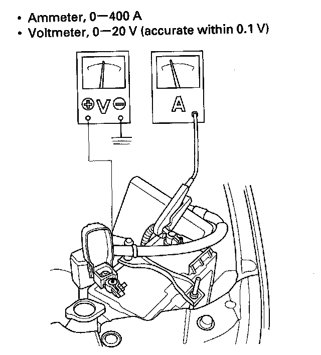
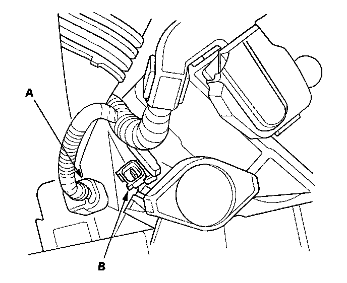

Component Tests and General Diagnostics
Starter Circuit TroubleshootingNOTE:
- Air temperature must be between 59 and 100 °F (15 and 38 °C) during this procedure.
- After this inspection, you must reset the engine control module (ECM), other wise the ECM will continue to stop the fuel injectors from functioning.
- The battery must be in good condition and fully charged.

1. Hook up the following equipment:
2. Connect the HDS to the data link connector (DLC).
3. Turn the ignition switch ON (II).
4. Make sure the HDS communicates with the vehicle and the ECM. If it doesn't, troubleshoot the DLC circuit.
5. Select PGM-FI, INSPECTION, then ALL INJECTORS OFF on the HDS.
6. Set the parking brake, then with the clutch pedal pressed, turn the ignition switch to START (III).
Does the starter crank the engine normally?
YES - The starting system is OK. Go to step 13.
NO - Go to step 7.
7. Check the battery condition. Check the electrical connections at the battery, the negative battery cable to the body, the engine ground cables, and the starter for looseness and corrosion. Then try cranking the engine again.
Does the starter crank the engine?
YES - Repairing the loose connection corrected the problem. The starting system is OK. Go to step 13.
NO - Check the following:
- If the starter will not crank the engine at all, go to step 8.
- If starter cranks the engine erratically or too slowly, go to step 10.
- If starter does not disengage from the flywheel ring gear when you release the key, replace the starter, or remove and disassemble it and check for the following:
- Solenoid plunger and switch malfunction
- Dirty drive gear or damaged overrunning clutch

8. Make sure the transmission is in neutral, and set the parking brake. Disconnect the starter sub harness 1P connector (A) from the main wire harness 1P connector (B). Connect a jumper wire from the battery positive terminal to the starter sub harness 1P connector.
Does the starter crank the engine?
YES - Go to step 9.
NO - Check the BLK/WHT wire between the starter subharness 1P connector and the starter. If the wire is OK, remove the starter, and repair or replace as necessary.
9. Check the following items in the order listed until you find the open circuit:
- The VEL wire and connectors between the underdash fuse/relay box and the ignition switch.
- The RED wire and connectors between the underdash fuse/relay box and the main wire harness 1P connector.
- The ignition switch.
- The clutch interlock switch and connector.
- The starter cut relay.
10. While cranking the engine, check the cranking voltage and the current draw.
Is the cranking voltage greater than or equal to 8.5 V and is the current draw less than or equal to 380A?
YES - Go to step 11.
NO - Replace the starter, or remove and disassemble it, and check the following:.
- Drag in the starter armature
- Shorted armature winding
- Excessive drag in the engine
11. Check the engine speed while cranking the engine.
Is the engine speed above 100 rpm?
YES - Go to step 12.
NO - Replace the starter, or remove and disassemble it, and check the following:.
- Open circuit in the starter armature commutator segments
- Excessively worn starter brushes
- Open circuit in the starter brushes
- Dirty or damaged helical splines or drive gear
- Faulty drive gear clutch
12. Remove the starter, and inspect its drive gear and the flywheel ring gear for damage. Replace any damaged parts.
13. Select ECM reset to cancel ALL INJECTORS OFF on the HDS.